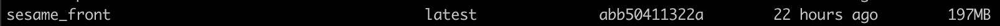

Deploying the front-end 🦅
Deploying an application to Kubernetes required you to have at least those components
- a docker image
- a yaml deployment configuration file
We’ll take a look at these components steps by steps
Building our Docker image 🐣
As said earlier we’re using the Docker runtime environment for our small deployment example. In order for minikube to be able to use the image. We will build a Docker image for the front-end.
A front-end Dockerfile is available for the example. It’s pretty simple we create the folder, copy the project and the start.sh will be the script which will install the npm dependencies & run the project.
Run the command below from the root of the project. This will build a docker image for the front-end
docker build -t sesame_front -f build/node/Dockerfile.release <path to root folder>/kubernetes-docker-lab
What this command does ? 🤔
- We ask docker to build an image wit the options
-twe provide the name in this case sesame_front-fWe’re providing the context of building the dockerfile. In this case from the root folder
Once the image is build run the command docker images. and you should see the docker image available in the list of images like below. Houra ! 😁

Create the deployment configuration 🐥
Our front-end application is a stateless app. Indeed we’re storing nothing on our pods. Therefore the most suitable type of deployment is the Deployment type.
As configurating the yaml file can be a bit complex we’re providing the front-end yaml deployment file. Below is how it looks with some information about each fields. The deployment file is available in the folder k8s/deployment/front_deployment
apiVersion: apps/v1
# This is the type of deployment we talked earlier
kind: Deployment
# Defining metadata allow us to recognize our application easily (can be use by external tools such as Stackdriver, kubectl)
metadata:
# Name of your deployment
name: bobba-vue
# A set of identifier that can help you to identify the pods
labels:
app: bobba-vue
tier: frontend
# Spec is where you are configuring your deployment
spec:
# number of replicas
replicas: 2
# Selector is use for the deployment to apply to the pod
# Using matchLabels it must match at least one of the label defined earlier
selector:
matchLabels:
app: bobba-vue
# Definition of your pod here
template:
metadata:
labels:
app: bobba-vue
spec:
containers:
- name: bobba-vue
image: sesame_front:latest
# This line enabled us to use a local image and not to fetch one coming from a server
imagePullPolicy: Never
# Expose the container port to the cluster
ports:
- containerPort: 8080
# a list of arguments that you can use at the startup of your pods
args:
- sh
- start.sh
Deploying our front-end
Now that you understand what’s inside a deployment configuration file. Let’s deploy our app. 🐤
Run the following command:
kubectl create -f k8s/deployment/front_deployment.yml
This command call the kube-api-server which will validate the configuration file. Once validate Kubernetes will create our deployment
Secondly listen to the deployment status of the pod by running this command:
kubectl rollout status deployment.v1.apps/bobba-vue
You should get a success message that said that your deployment is successfull. Finally check if your pod are running by using the command
kubectl get pods
Et voilà you made your first deployment ! 😃
Now let’s deploy our API
Error 🚫
If you have any error you can check the event status of your pods by running this command.
# Get the list of available pods
kubectl get pods
# Get the event of a pod
kubectl describe pod <pod_name>
# Now look at the events section (should be at the end)
# You could also check the pod's log by running this command
kubectl logs -p <pod_name>
# if the pod is killed you could get the logs of a pod like this too
kubectl logs <pod_name>